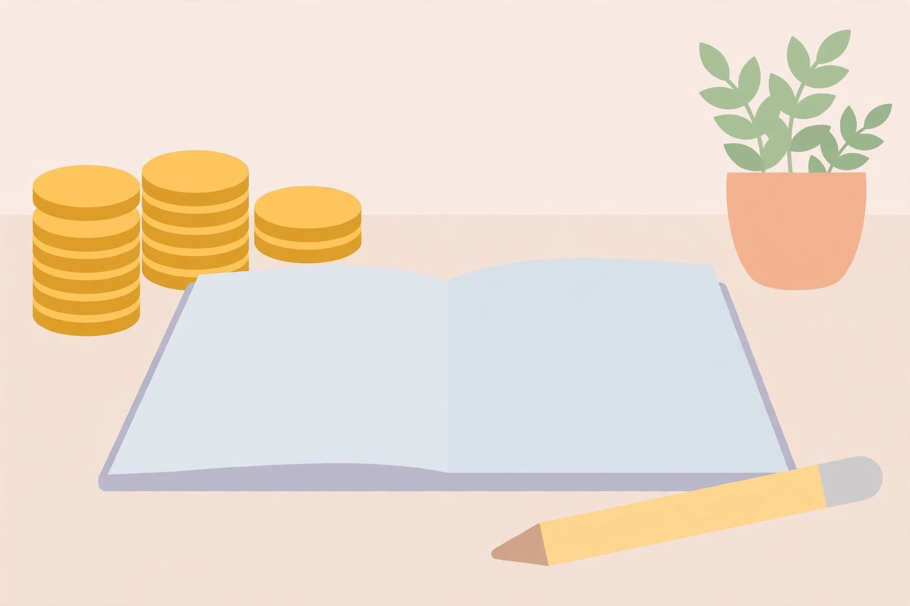

Simple budgeting a teenager will actually stick with

Most budgeting advice fails for teenagers for one reason: it's designed for adults with bills, salaries, and spreadsheets. A teen with irregular income and a phone full of distractions needs something lighter — a system simple enough to survive a busy school week. Here's one that works.
The one-notebook method
Forget categories and formulas to start. The whole system is one notebook (or one note on a phone) with two lists: money in, money out. Every time money arrives — allowance, job pay, birthday cash — write it down. Every time money leaves, write it down. That's it. After one month, your teen has something most adults don't: an honest record of where their money actually goes.
The point isn't precision. It's awareness. Most teens are stunned by how much "small" spending adds up — the snacks, the app purchases, the bus fare nobody remembers. Seeing it written down is the lesson. No app does this better than the simple act of writing, because writing forces you to confront each purchase one at a time.
Pay yourself first, even if it's small
The one rule that turns tracking into budgeting: decide the savings amount before the money arrives, and move it immediately. If your teen gets forty dollars on Friday, ten of it goes to savings before anything is spent — not "whatever's left over at the end of the week," because there will never be anything left over. Leftovers are a myth at every age.
The percentage matters less than the habit. Saving ten percent reliably beats saving thirty percent "someday." And the amount can grow as income grows — the skill is deciding in advance and following through.
The weekly money check
Once a week — Sunday evening works well — spend five minutes with the notebook. Three questions:
- How much came in this week?
- How much went out?
- Anything you'd take back if you could?
That last question is the whole education. Over a few months, patterns emerge: the impulse buys that felt great for an hour, the subscription nobody watches, the repeated lunch purchases that would have been free from home. Nobody needs to lecture — the pattern lectures for itself.
Give every dollar a job (loosely)
Once tracking is a habit, add the lightest possible plan: before each pay period, split expected income into three rough purposes — spend, save, give. This is the bucket idea from the allowance guide, applied to all income. The split doesn't have to be perfect. A teen who plans to spend thirty, save ten, and give five — and roughly does it — is budgeting better than most adults.
Where does the plan live? Same notebook, or a note on the phone. The tool matters far less than the routine of planning before spending instead of accounting after spending.
What to do when the budget breaks
It will break. Your teen will overspend, forget to track for two weeks, or blow the whole plan on something shiny. That's fine — the system isn't broken, it's working. The right response isn't starting over with guilt; it's a two-minute reset: look at what happened, adjust the plan, keep going. Budgeting is a skill built from hundreds of small corrections, not one perfect month.
One guardrail helps: when money runs out before the next payday, don't refill it. The empty week is the teacher. Covering the gap teaches that budgets are decorative — living with it teaches that budgets are real.
Keep it theirs
A teen's budget has to belong to the teen. If you dictate every category and inspect every line, it's your budget wearing their name, and they'll drop it the moment you're not watching. Your job is coach, not auditor: ask questions, point at the patterns, and let them decide what changes. The budget that survives is the one they built themselves.